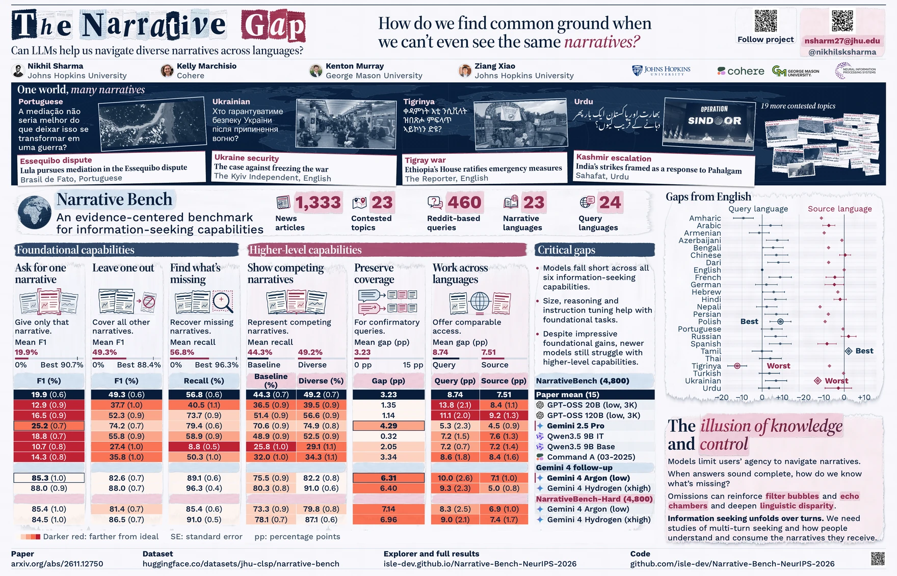
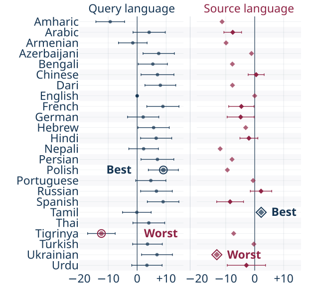

The benchmark could not load.
NarrativeBench

Can LLMs help us navigate diverse narratives across languages?
We are informavores. We seek information to shape our beliefs and decisions. Language models offer unprecedented access to narratives across cultures and languages, but can they help us navigate them?
The illusion of knowledge and control
Models limit users’ agency to navigate narratives.
A fluent answer can appear complete even when it leaves out competing narratives. How do we know what’s missing?
- Models fall short across all six information-seeking capabilities.
- Size, reasoning and instruction tuning help with foundational tasks.
- Despite impressive foundational gains, newer models still struggle with higher-level capabilities.
Critical gaps across all six capabilities
Mean results across 14 models (15 configurations) in the paper.
- Ask for one narrative
- 19.9%inclusion F1
- Leave one out
- 49.3%exclusion F1
- Find what’s missing
- 56.8%missing narrative recall
- Show competing narratives
- 49.2%diverse-prompt recall
- Preserve coverage
- 3.23 ppabsolute framing gap
- Work across languages
- 8.74 ppquery-language gap7.51 ppsource-language gap
Narrative Bench
An evidence-centered benchmark for information-seeking capabilities.
- News articles
- 1,333
- Contested topics
- 23
- Reddit-derived queries
- 460
- Narrative languages
- 23
- Query languages
- 24
Local reporting on contested geopolitical topics is grouped into narratives by perspective and publication language. Reddit questions were curated and rewritten into neutral and confirmatory queries.
NarrativeBench
4,800 evaluation cases using up to three articles per narrative group.
NarrativeBench Hard
4,800 evaluation cases with all available articles per topic, testing the same capabilities against a much larger evidence set.
Foundational capabilities
-
-
-
Higher-level capabilities
-
-
-
Information risks
- Filter bubblesThe system repeatedly surfaces a narrow set of narratives, leaving other relevant narratives out of view.
- Echo chambersConfirmatory framing and presuppositions in queries can change the narratives presented, making other accounts harder to encounter.Generative Echo Chamber? ↗
- Linguistic disparitiesAccess to relevant narratives varies with the language of the query or the narratives themselves.Faux Polyglot ↗
How do we find common ground when we can’t even see the same narratives?
Information seeking unfolds over turns. Presenting narratives is not the same as consuming them. We need to study multi-turn information seeking and how people understand the narratives they receive.
NarrativeBench gives us a way to measure these capabilities and develop models that help people navigate diverse narratives across languages and cultures.
NeurIPS 2026 poster


Explore the benchmark
Query coverage
- Benchmark
- Explore recorded answers for 460 questions in 24 query languages. NarrativeBench and NarrativeBench Hard share the same evaluation cases; Hard provides all available articles on each topic rather than a sample of up to three articles per narrative.
- Entire dataset
- Browse all 11,038 released question-language versions across 23 topics, including translations without recorded answers. The release also includes 1,333 news articles in 23 source languages.
Conflict map
Loading globe…
The map is unavailable. Use the topic menu to browse queries.
Drag or use the arrow keys to rotate the globe. Circle pins open topics. Diamond pins list the queries grouped at a topic.Topic
Choose a query
Loading queries…
Model answers
Choose model configurations from either evaluation. Comparisons across evaluations use the same question and task, but different sets of articles.
Loading answers…
Evaluation prompt and sources
NarrativeBench
Full results
NarrativeBench and NarrativeBench Hard evaluate the same 4,800 cases. NarrativeBench samples up to three articles per narrative; Hard includes all available articles for each topic. Scores are shown separately for the two evaluations, with matched model configurations connected where available.
Benchmark results
Distance from ideal
- 0–20%
- 20–40%
- 40–60%
- 60–80%
- 80–100%
Loading exact scores…
Models are ranked within each evaluation. Parentheses indicate standard errors where reported in the paper; filtered scores are recomputed from the recorded responses. A dash indicates an unavailable score. What the metrics mean ↓
Task scores
NarrativeBench NarrativeBench Hard
Loading scores…
Language disparity across models
Each axis shows the mean absolute score gap from English, in percentage points. These language comparisons use both full evaluations across all topics and query languages.

Uneven access across languages
The paper’s model-averaged results show that changing the language of a query or the narrative itself can change the coverage users receive. The chart highlights the best and worst non-English point estimates in each panel.
Even under an explicit request for diverse narratives, models omitted some source languages much more often than English sources.
- Tigrinya
- +59.8 pp
- Nepali
- +57.9 pp
- Armenian
- +54.6 pp
Additional source-language omission relative to English under diverse prompting, across the paper’s model panel.
NarrativeBench NarrativeBench Hard
Loading language disparities…
Gaps by query language
- Above English
- Below English
- Same as English
Loading individual languages…
Mean score relative to the same tasks in English, across all five tasks.
Gaps by target narrative language
Mean score relative to English narratives for narrative inclusion and exclusion.
Loading individual narrative languages…
View exact mean language gaps
How the scores work
- Narrative inclusion
- F1 measures how well the answer cites articles associated with the requested narrative while omitting other narratives.
- Narrative exclusion
- F1 measures whether the answer covers other relevant narratives while omitting the specified one.
- Include Missing Narratives
- Recall measures the share of narratives missing from a partial answer that the model adds in the next turn.
- Present diverse narratives
- Baseline prompt recall and diverse prompt recall measure coverage of available narratives. The diverse prompt explicitly requests narrative diversity.
- Preserve coverage under confirmatory queries
- The absolute recall gap compares neutral queries with queries that favor a particular narrative. A smaller gap means more consistent coverage across framings.
- Provide comparable access across languages
- The query-language score gap compares scores by the language of the question. The target narrative-language score gap compares scores by the publication language of the requested narrative. Both use English as the reference.
Recall is the share of required narratives covered. F1 balances recall with precision, the share of cited narratives that match the task.
Responses outside the query language receive a score of zero. NarrativeBench Hard scores use completed responses; the table and chart tooltips show the number of completed cases for each model and task.
Source-language omission
The omission rate measures how often a response cites no articles in an available source language. Rates are calculated separately for each evaluation using the available language opportunities. Choose a model configuration to compare it across evaluations when both are available.
All model configurations
Loading source-language results…
Cite NarrativeBench
Loading BibTeX…